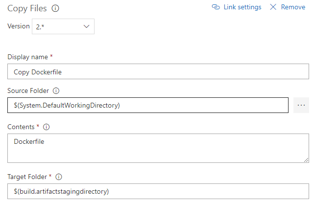
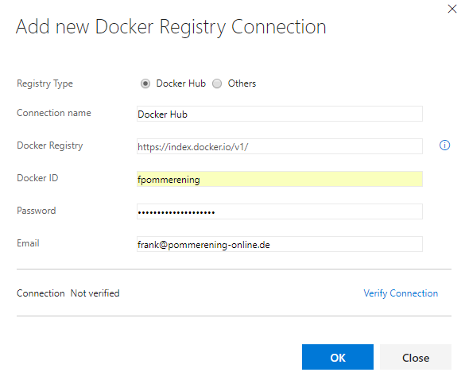

.net in the big box
.NET User Group Hamburg
01.11.2017

Frank Pommerening

- Senior - Softwareentwickler
- Consultant
- Softwarearchitekt
frank@pommerening-online.de
Gründung: Mai 2012
Anzahl Mitarbeiter: 8 feste
Branchenfokus: Energiebranche
- Consulting (fachlich & IT)
- Requirements Engineering / Projektmanagement
- IT-Fachprozess-Analyse / Dokumentation
- Software-Entwicklung
- Microservices, SOA, REST, OOA und OOD
- Microsoft Technologien z.B. .NET (C#), WPF, WCF
- Datenbanken (MS SQL Server / Oracle / MongoDB)
Build .Net Core App

Build inside
Die Anwendung wird im Container während der Imageerstellung gebaut.| Vorteile | Nachteile |
|---|---|
|
|
Build outside
Die Anwendung wird unabhängig vom Container erstellt. Die entstandenen Artefakte werden bei der Imageerstellung kopiert.| Vorteile | Nachteile |
|---|---|
|
|
Multi-Stage Build
Die Anwendung wird während der Imageerstellung in einem temporären Container gebaut. Die entstandenen Artefakte werden in den finalen Container kopiert.| Vorteile | Nachteile |
|---|---|
|
|
Build / Integration Dockerhub
 Voraussetzungen:
Voraussetzungen:
- Accounts bei GitHub und Docker Hub existieren
- Quellcode inkl. Dockerfile ist in einem Repository auf GitHub vorhanden
Verbindung GitHub und Docker Hub
- Login bei Docker Hub
- Profil -> Setting -> Linked Accounts & Services

- Auswahl des Zugriffs

- Autorisierung des Zugriffs
- Bestätigung mit GitHub-Kennwort


Automatischer Build
- Login bei Docker Hub
- Create -> Create Automated Build
- Auswahl Herkunft Quellcode (GitHub oder Bitbucket)

- Auswahl des Quell-Repository

- Konfiguration Docker Hub-Repository
- Namespace (Fix: Benutzer)
- Name (Default: Name des GitHub-Repository)
- Sichtbarkeit (Default: Öffentlich)
- Kurzbeschreibung (Pflichtfeld)

- Anpassung Build-Einstellungen (Build-Settings)
- Pfad zum Dockerfile
- Definition Tags
- Verwendete Git-Branches

- Prüfung Build (Build Details)

Visual Studio Team Services
Cloudbasierte Komplettlösung für Entwickler von Microsoft
Zugang / Anmeldung (per Live-ID)
Erstellung Personal Access Token
Der Personal Access Tokel erlaubt dem Build-Agent die Authentifizierung gegenüber den Visual Studio Team Services.
Starten des Build-Agent
docker run -e VSTS_ACCOUNT=username
-e VSTS_TOKEN=personal_access_token
-v /var/run/docker.sock:/var/run/docker.sock
-it microsoft/vsts-agent- VSTS_POOL ("Default")
- VSTS_AGENT ($(hostname))
Je nach Umgebung z.B. TFS 2017 werden spezielle Tags benötigt.
Defintion Build
Beispiel: Erstellung einer .NET Core 2 Anwendung mit den Container-Erstellung und Veröffentlichung auf Dockerhub.Herkunft für Quellcode
- Visual Studio Team Services
- GitHub
- Bitbucket
- externe Git-Repos
- externe Subversion-Repos
Auswahl Vorlage
Auswahl: Empty process
Defintion Name / Build-Agent
Eigenen Build-Agents werden in der Agent queue Default angelegt.
.NET Core Schritte

.NET Core Restore
Angabe der Projekt(e) oder alle mit **/*.csproj
.NET Core Build
.NET Core Publish
Angabe eines Unterordner unterhalb des Ausgabeordners ist für Docker-Build erforderlich.
Kopieren des Dockerfile
 Das Dockerfile wird vom Quellenordner in den Ausgabeordner kopiert. So liegt es im Build-Context.Ausführung Docker-Build
Docker File:
Ausgabeordner/Dockerfile
Image Name:
User/Repo/Build-ID
Optional:
Include Latest Tag
Docker Registry Connection
Verwendung
- Abruf privater Images
- Push von erstellten Images
Neben dem Docker Hub kann auch eine private Registry verbunden werden.
Push zum Docker
Container Registry Type:- Container Registry (Docker)
- Azure Container Registry
Docker Registry Connection:
neu erstellen / bestehende wählen
Imagename: siehe Build-Einstellung
Optional: Include Latest Tag
Bereinigung der erstellten Images
Löschen von Images ist keine vordefinierte Aktion deshalb generische Aktion Run a Docker Command wählen.
Befehl:
rmi user/repo/build-ID user/repo:latest
Docker Swarm / Docker Swarm Mode

Container-Cluster über mehrere Docker-Hosts
Docker Swarm Visualizer
Das Tool Docker Swarm Visualizer gestattet eine Übersicht der laufenden Services und Hosts.

Lizenz: Apache GitHub
Verfügbare Container:
- Linux x64: dockersamples/visualizer
- Linux arm: alexellis2/visualizer-arm
- Windows: stefanscherer/visualizer-windows
Docker Swarm
Cluster / Swarm initalisieren
docker swarm init [OPTIONS] Nach erfolgreicher Erstellung werden der Token und Befehl zum Hinzufügen angezeigt.
Knoten hinzufügen
docker swarm join [OPTIONS] HOST:PORT-- token Zugriffstoken
Knoten entfernen
docker swarm leave [OPTIONS]--force, -f Erzwingt das Verlassung und ignoriert Warnungen WICHTIG: die Node muss noch mein Manager abgemeldet werden!
Zugriffstoken anzeigen
docker swarm join-token [OPTIONS] (worker|manager)Cluster / Swarm aktualsieren
docker swarm Update [OPTIONS]Docker Node
Knoten anzeigen
docker node ls [OPTIONS]Detailierte Informationen zu / zum Knoten anzeigen
docker node inspect [OPTIONS] self|NODE Aufgaben / Prozesse eines Knoten anzeigen
docker node ps [OPTIONS] [NODE] Knoten aus dem Cluster entfernen
docker node rm [OPTIONS] NodeKnoten vom Worker zum Manager heraufstufen
docker node promote NODEKnoten vom Manager zum Worker herabstufen
docker node demote NODEDocker Swarm - Services
Service erstellen
docker service create [OPTIONS] IMAGE [COMMAND] [ARG...]| --name | Name für den Service |
| --network | Verwendetes Netzwerk |
| --publish, -p | Veröffentlicht den Port |
| --replicas | Zahl der gleichzeitig laufenden Instanzen |
Services entfernen
docker service rm SERVICEServices anzeigen
docker service ls [OPTIONS] Details zu / zum Services anzeigen
docker service inspect [OPTIONS] SERVICEServices hoch/runter skalieren
docker service scale SERVICE=ANZAHLLogs eines Services anzeinge
docker service logs [OPTIONS] SERVICEDocker Swarm mit
Docker-Compose / Docker-Stack
Docker-Compose muss u.a. unter Linux manuell installiert werden.
Die Dateistruktur ist ab identisch (V3+). Docker-Compose ignorierte bestimmte Einstellungen.
Docker-Stack kann nur auf einem Docker-Host der Teil eines Swarm (Cluster) ist ausgeführt werden.
Stack bereitstellen
docker stack deploy [OPTIONS] STACK| -compose-file , -c | Name / Pfad zum Compose-File |
Stack entfernen
docker stack rm STACKStacks anzeigen
docker stack lsServices eines Stacks anzeigen
docker stack services [OPTIONS] STACKDocker Swarm - Multiarchitektur
- x64 / ARM
- Linux / Windows
Über Label können die Knoten gekennzeichnet werden. Informationen wie das OS bzw. die CPU-Architektur sind bereits vorhanden.
Label setzen
docker node update --label-add KEY[=VALUE]Label entfernen
docker node update --label-rm KEYEinschränkungen
Service-Defintion
docker service create --name myservice
--constraint 'node.labels.type == web' myimage:latest Stack-Definition (Compose-File)
version: "3.2"
services:
myservice:
image: myimage:latest
deploy:
placement:
constraints:
- 'node.role == manager'
- 'node.platform.os == linux'
- 'node.labels.type == web'